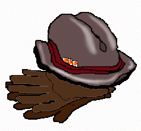

RONALD STARK WAS KHOURI ALI WHEN posing as a Palestinian radical bent on helping terrorists infiltrate embassies, Terrence W. Abbot when pushing drugs in Italy. He spoke six languages, bragged about ties with the CIA, and may have used more aliases when courting the PLO in Lebanon, conspiring with the Red Brigades, and keeping up cordial contact with friends at the American embassy in London.
pockets contain: an Americanflag, brown acid, ticket to Woodstock, mud, cyanidepill, binoculars, international ticket, orange acid, vials of liquid, rock 'n' roll, pocket watch